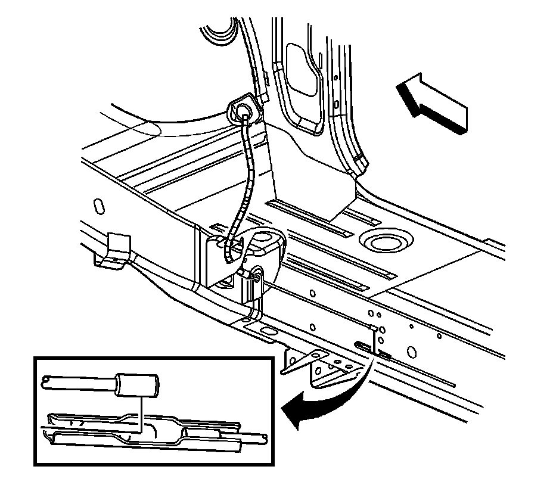
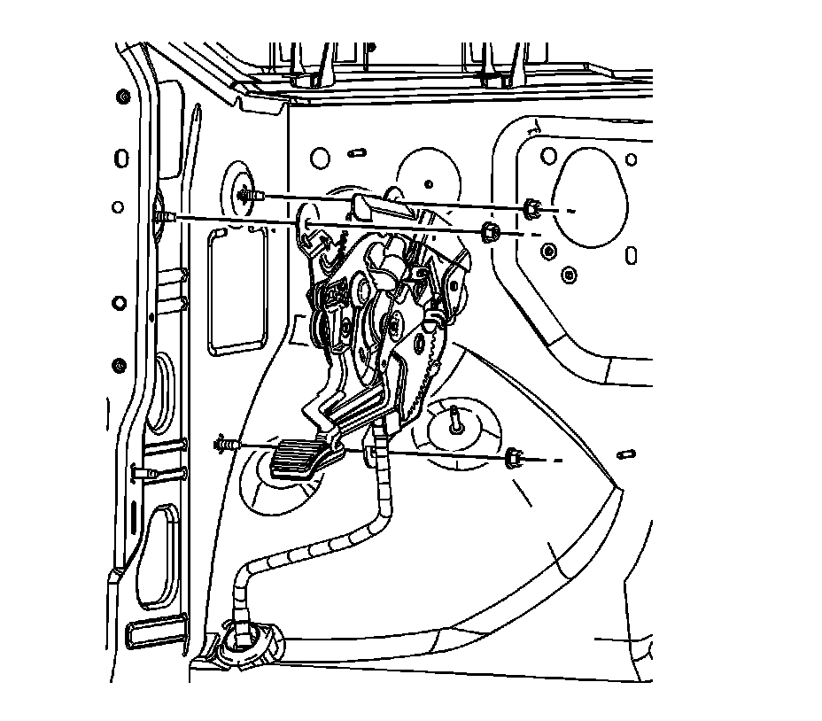
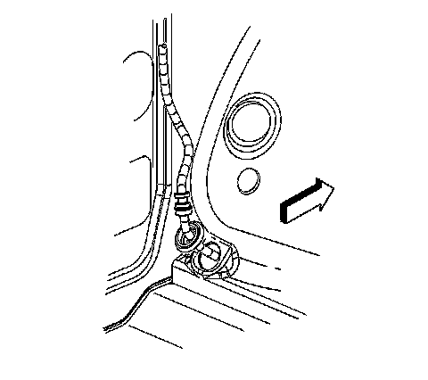
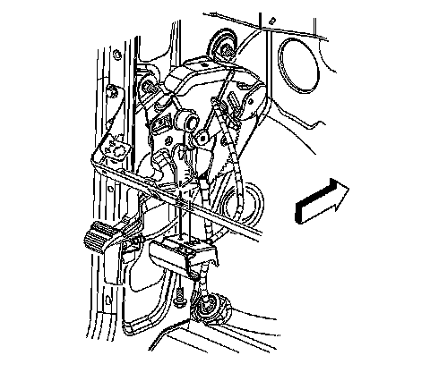

Parking Brake Pedal: Service and Repair
Park Brake Pedal Assembly Replacement
Removal Procedure
Important: The following service procedure includes the removal of the front park brake cable. The front park brake cable is NOT serviced separately, but serviced with the park brake pedal assembly.
1. Remove the left side hinge pillar trim panel. Refer to Body Hinge Pillar Trim Panel Replacement.
2. Disconnect the park brake warning lamp electrical connector.
3. Disable the park brake cable automatic adjuster. Refer to Parking Brake Cable Adjuster Disabling.
4. Remove the bolt and disconnect the park brake pedal release handle from the instrument panel.
5. Without disconnecting the electrical connectors, remove the left side instrument panel electrical center/junction block and position aside. Refer to Instrument Panel Electrical Center or Junction Block Replacement - Left Side.
6. Raise and support the vehicle. Refer to Lifting and Jacking the Vehicle.

7. Disconnect the front park brake cable from the intermediate cable connector by drilling a 3 mm (1/8 in) hole through the dimple in the front to intermediate park brake cable connector.
8. Release the front park brake cable from the frame by depressing the locking tabs.
9. Lower the vehicle.

10. Remove the park brake lever mounting nuts.

11. Position the floor carpet to expose the park brake cable pass-through grommet.
12. Release the park brake cable pass-through grommet from the vehicle floor.
13. Remove the park brake lever and front cable from the vehicle.
Installation Procedure
Important: Ensure the grommet for the front park brake cable is properly seated in the front floor panel.
1. Insert the front brake cable through the hole in the front floor panel and seat the pass-through grommet.
2. Position the floor carpet to the floor pan.
3. Position the park brake pedal assembly on the side panel.
Notice: Refer to Fastener Notice.
4. Install and finger tighten the mounting nuts.
Tighten the nuts to 25 N.m (18 lb ft).
5. Connect the park brake warning lamp connection.

6. Install the park brake release handle to the instrument panel.
7. Install the park brake release handle bolt.
Tighten the bolt to 9 N.m (80 lb in).
8. Install the hinge pillar trim panel. Refer to Body Hinge Pillar Trim Panel Replacement.
9. Install the left side instrument panel electrical center/junction block. Refer to Instrument Panel Electrical Center or Junction Block Replacement - Left Side.
10. Raise the vehicle.
11. Install the front park brake cable to the frame and press the retainer into place.
12. Connect the front park brake cable to the front to intermediate park brake cable connector.
13. Lower the vehicle.
14. Enable the park brake cable automatic adjuster. Refer to Parking Brake Cable Adjuster Enabling.
15. Adjust the park brake. Refer to Park Brake Adjustment.